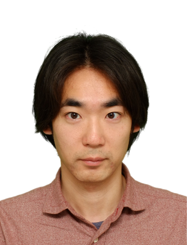

Post-doctoral researcher
Organization for the Strategic Coordination of Research and Intellectual Properties
Meiji University
eita.nakamura[at]gmail[dot]com
Curriculum Vitae
Organization for the Strategic Coordination of Research and Intellectual Properties
Meiji University
eita.nakamura[at]gmail[dot]com
Curriculum Vitae
Research Interests
- Computational Music Modelling & Analysis
- Music Information Processing
- Machine Learning
Research Topics
- Automatic Music Accompaniment (Eurydice system)
- Score-Performance Matching
- Computational Music Arrangement
- Piano Fingering
- Music Transcription
- Computational Music Analysis and Composition
Demonstrations
Eurydice Demo (MIDI input)
Eurydice Demo (Acoustic input)
Selected Publications and Talks
(See all here)
- Eita Nakamura, Shigeki Sagayama, Automatic Piano Reduction from Ensemble Scores Based on Merged-Output Hidden Markov Model. Proc. 41st International Computer Music Conference, 2015.
- Eita Nakamura, Shinji Takaki, Characteristics of Polyphonic Music Style and Markov Model of Pitch-Class Intervals. Proc. 5th Mathematics and Computation in Music, 2015.
- Eita Nakamura, Nobutaka Ono, Shigeki Sagayama, Merged-Output HMM for Piano Fingering of Both Hands. Proc. 15th International Society for Muisc Information Retrieval Conference, pp. 531-536, 2014. [Proceeding]
- Eita Nakamura, Yasuyuki Saito, Nobutaka Ono, Shigeki Sagayama, Merged-Output Hidden Markov Model for Score Following of MIDI Performance with Ornaments, Desynchronized Voices, Repeats and Skips. Proc. Joint 40th International Computer Music Conference | 11th Sound and Music Conference, pp. 1185-1192, 2014. [Proceeding]
- Shigeki Sagayama, Tomohiko Nakamura, Eita Nakamura, Yasuyuki Saito, Hirokazu Kameoka, Nobutaka Ono, Automatic Music Accompaniment Allowing Errors and Arbitrary Repeats and Jumps. Proc. 167th Meeting of ASA, POMA Vol. 21 No. 035003, pp. 1-11, 2014. [Proceeding]
- Eita Nakamura, Tomohiko Nakamura, Yasuyuki Saito, Nobutaka Ono, Shigeki Sagayama, Outer-Product Hidden Markov Model and Polyphonic MIDI Score Following. Journal of New Music Research, Vol. 43 No. 2, pp. 183-201, 2014. [arXiv:1404.2313, Journal Site]
Contact
Eita NakamuraMeiji University Nakano Campus (Room 1004)
Nakano 4-21-1, Nakano-ku, Tokyo 164-8525, Japan
e-mail: eita.nakamura[at]gmail[dot]com
phone: +81-03-5343-8332